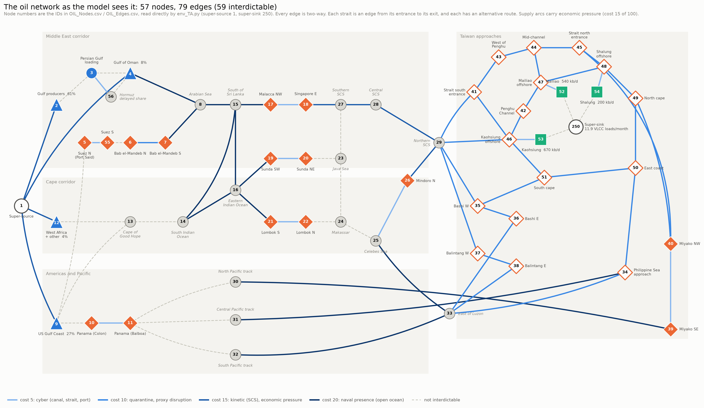
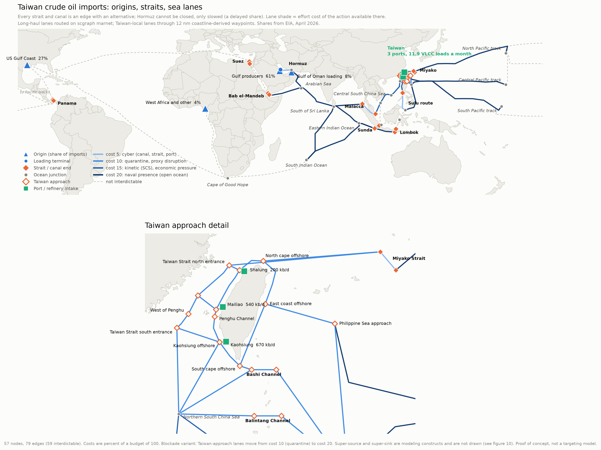
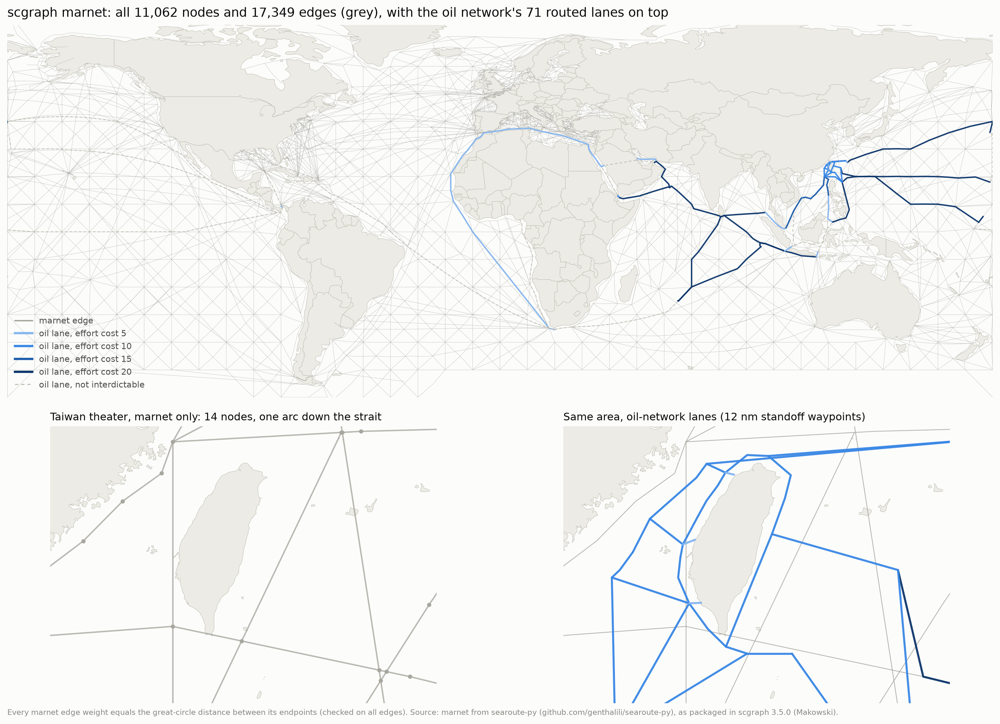

Where would an adversary cut Taiwan’s oil, and can an AI trained on rail tell us?
Taiwan imports nearly all of its crude oil by sea, and every barrel passes through a handful of straits. I am turning those shipping routes into a network model, and using LTC Webb’s reinforcement-learning interdiction agent to ask two things: where would an adversary with limited resources act to cut Taiwan’s oil supply, and can an AI trained on one kind of network reason about a very different one?
Why it matters
Energy is widely identified as Taiwan’s sharpest vulnerability in a blockade or quarantine. The chokepoints are not hypothetical: the Strait of Hormuz, which carried 61% of Taiwan’s crude in 2025, has been largely closed since February 2026, and Taiwan has had to reroute supply. Most open analysis of a Taiwan blockade comes from wargames; this project brings an optimization model to the same question.
Scope
- In: crude oil only; the four regions that supply it (Persian Gulf, U.S. Gulf Coast, Oman, West Africa); the straits and canals it must pass; Taiwan’s three refinery ports; one month of supply.
- Out: LNG and coal, detailed military campaigns, escorts and counter-attacks, and anything classified. A proof of concept built from open sources, not a targeting tool.
What I am looking to find
- Where the attacker acts. Does a budget-limited attacker go after distant chokepoints such as Hormuz and Malacca, or Taiwan’s own approaches?
- Quarantine versus blockade. How does the answer change between a lower-cost coast-guard quarantine and a higher-cost naval blockade?
- Transfer. Does an agent trained on the Ukrainian rail network still find sound strategies on a maritime network without retraining?
Previous work it builds on
- Network interdiction: the classic optimization models of Wood (1993) and Cormican, Morton and Wood (1998), surveyed in Smith and Song (2020).
- LTC Webb’s reinforcement-learning approach: Webb and Caplice (2025), which trains an agent to find attacker strategies (defeat, isolate, canalize, divert) on the Ukrainian rail network.
- Taiwan blockade analysis: CSIS’s quarantine scenarios and its 2025 Lights Out? blockade wargames, which identify energy shipping as the critical factor.
- Data: the EIA’s Taiwan brief (2026) for import sources and refinery capacity, and IMF PortWatch for shipping traffic.
Goals
- An open-source, defensible model of Taiwan’s crude oil supply network (built; shown below).
- A clear picture of where interdiction is most effective at low, medium and high effort.
- An answer on whether the agent’s learned strategy transfers from rail to sea.
- A poster presenting the results at the end of the semester.
57 nodes, 79 edges, every lane on a real sea route


Four rules that make the network defensible
- Sources and sinks from EIA data. Four origin regions weighted by 2025 import shares; three ports weighted by refinery capacity (Kaohsiung 670, Mailiao 540, Shalung 200 thousand barrels a day). Demand is 11.9 VLCC loads a month: 783 thousand barrels a day of throughput, divided by 2 million barrels a load.
- Straits are edges. Every strait and canal runs from its entrance node to its exit node, so an action against it shuts the transit, and there is a node at every junction where routes meet or separate.
- Every interdiction point has an alternative. Checked automatically on every build. Hormuz has no sea alternative, and China cannot close it from that far away, only slow ships there. So Hormuz is two lanes: 80% of Gulf oil always gets through, and China can remove a 20% delayed share.
- Real geometry. Lanes are routed on the scgraph sea-lane network, which is too coarse around Taiwan (14 nodes in the whole theater), so the Taiwan lanes use coastline-derived waypoints. No lane crosses land.

One effort budget, a different action on each kind of lane
The attacker spends a single effort budget. Each edge carries the one action that fits where it is, with an effort cost and a probability p that the action shuts the edge, read as the expected share of the month it is closed. That is the same per-edge cost and probability the environment already uses. China’s budget is fixed at 100, so each cost is the percent of its total effort the action uses. p is anchored on real disruptions; costs are ranked by the legal threshold crossed and the distance from PRC bases.
| Action | Where it is allowed | Cost (of 100) | p | What p is anchored on |
|---|---|---|---|---|
| Cyber on a canal or port | Panama and Suez canals, the three port entries | 5 | 0.10 | Nagoya and DP World Australia port shutdowns, 2023 (about 3 days) |
| Cyber on an open strait | Malacca, Sunda, Lombok, the Sulu route, Miyako | 5 | 0.05 | GPS jamming in Hormuz, 2025: collisions, but traffic kept moving |
| Jamming delay | Hormuz, the 20% delayed share | 5 | 0.80 | Assumption: jamming and harassment reliably slow ships; slower trips mean fewer cargoes a month |
| Quarantine (variant A) | Taiwan approaches | 10 | 0.80 | CSIS quarantine scenarios; Iran’s 2026 Hormuz permit regime |
| Blockade (variant B) | Taiwan approaches | 20 | 0.95 | Hormuz 2026: mines, attacks and permits cut traffic about 95% |
| Proxy disruption | Bab el-Mandeb | 10 | 0.60 | Houthi campaign since 2023: Red Sea traffic down 50–67% |
| Kinetic (naval) | South China Sea only | 15 | 0.90 | CSIS Lights Out? blockade wargames, 26 games (2025) |
| Economic pressure | The four supplier arcs | 15 | 0.20 | Sanctions succeed in 34% of 116 cases (Hufbauer, Schott & Elliott, 1990); 4% on Pape’s recount |
| Naval presence (carrier group) | Indian Ocean, western Pacific | 20 | 0.20 | Assumption, between the Tanker War (about 2%) and the Houthis (about 60%) |
The other 20 edges cannot be interdicted, each with a stated reason: the demand arcs, loading inside the Gulf, the share of Hormuz that always gets through, the Atlantic, Mediterranean, eastern Pacific and Red Sea legs, and Indonesian archipelagic waters.
Counting p, the cheapest way to cut off all of Taiwan’s crude is a five-lane cordon around the west coast (50 of China’s budget of 100; 62.5 counting p), because all three crude ports sit on that coast. Ignoring p would pick three cyber attacks on the ports instead, which is why p has to stay in the model. This is the number the agent has to beat.
What the model holds fixed, stated up front
Kept from LTC Webb’s framework
- Two players, attacker leading and defender following (Stackelberg).
- Full information, zero-sum, one round.
- Outcomes: the meeting notes say deterministic; the training code runs stochastic. To confirm.
Added by this network
- The 2025 supplier mix is held fixed; no spot-market substitution.
- One month, one commodity: no stock drawdown, rationing, or switch to coal or LNG.
- No escorts or defender counter-force; the defender re-routes but does not fight back.
- One action per edge; quarantine and blockade are run as two variants.
- China always spends its full budget of 100. Effort costs are a ranking scaled to that budget, and the carrier group’s p is assumed; both are varied for sensitivity.
- Similar nodes are merged: one node per origin region, Kaohsiung and Dalin as one port, Oman and Fujairah as one terminal.
- Open, unclassified sources only. A proof of concept, not a targeting model.
Still open
- Shalung’s exact position, which appears in neither PortWatch nor Natural Earth.
How the questions get answered
- Baselines on the graph (exact min-cut, greedy), with sourced capacities.
- Agent evaluation on MIT SuperCloud (LTC Webb): zero-sum and canalize strategies, quarantine and blockade variants.
- Transfer test: the rail-trained agent on this network without retraining. If it transfers, it learned interdiction rather than a map; if it does not, that is also a result.
Products: crude delivered when China spends its full budget of 100 (min-cut, greedy and the agent), how that changes as action costs change (a blockade at 15, 20 and 30 first), a map of where the agent acts, the transfer result, and a poster.
Where every number comes from
Method
- Wood, R. K. (1993). Deterministic network interdiction. Mathematical and Computer Modelling, 17(2), 1–18.
- Cormican, K. J., Morton, D. P., & Wood, R. K. (1998). Stochastic network interdiction. Operations Research, 46(2), 184–197.
- Smith, J. C., & Song, Y. (2020). A survey of network interdiction models and algorithms. European Journal of Operational Research, 283(3), 797–811.
- Webb, M., & Caplice, C. (2025). Solving maximum flow network interdiction using reinforcement learning. SSRN 5392397.
Data
- U.S. Energy Information Administration, Taiwan country analysis brief (April 2026): import shares by origin (Figure 9) and refinery capacity (Table 2). eia.gov
- IMF PortWatch: daily port calls and chokepoint transits from satellite AIS. portwatch.imf.org
- Natural Earth: 10m coastline, public domain. github.com/nvkelso/natural-earth-vector
- scgraph 3.5.0 (Makowski), with the
marnetsea-lane network from searoute-py. github.com/connor-makowski/scgraph
Effort values and current events
- CSIS, How China Could Quarantine Taiwan.
- CSIS, Lights Out? Wargaming a Chinese Blockade of Taiwan (Cancian, Cancian & Heginbotham, 2025).
- UN General Assembly Resolution 3314 (1974), Definition of Aggression, Art. 3(c): blockade of a state’s ports by armed forces.
- Hufbauer, Schott & Elliott, Economic Sanctions Reconsidered, 2nd ed. (1990); Pape, “Why Economic Sanctions Do Not Work,” International Security (1997).
- Port cyber incidents: Nagoya, 2023; DP World Australia, 2023; Shahid Rajaee, 2020.
- GPS jamming in Hormuz: gCaptain, 2025.
- Tanker War statistics: Strauss Center; U.S. Naval War College.
- Houthi campaign: MARAD advisory 2026-006; Security Council Report, July 2026.
- 2026 Hormuz closure: Al Jazeera, August 2026; CRS R45281. Taiwan’s reroute: Malay Mail, April 2026.
The documents behind this page
Everything is kept in the project repository on GitHub; this page is a compact view of the parts that matter.